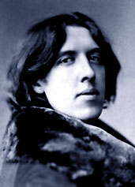
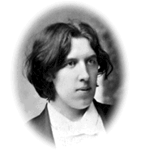

rotten > Library > Biographies > Authors > Oscar Wilde
Oscar Wilde
"Anybody can write a three-volume novel. It merely requires a complete ignorance of both life and literature."
Oscar
O'Flahertie Fingal Wills-Wilde was not English, but Irish. He
was best known as a flaming homosexual who wrote plays and had a bit of a sass-mouth.
In 1878, Oscar Wilde moved to London with a singular purpose: to achieve superstardom.
He'd already received his degree from Oxford University, and his entire upbringing
had been less than conventional. His father was an antiquarian, a gifted writer,
and a specialist in disease. His mother was a poet and a journalist, who'd taught
Wilde to view life as an unfolding performance.
Wilde enjoyed making a full spectacle of all his activities. He'd hail a cab
just to cross the street. His wardrobe was designed by theatre costume departments
who could easily understand the dramatic effects he wished to achieve. His standard
uniform included a velvet coat edged with braid, knee breeches, black silk stockings,
a soft loose shirt with wide low turned-down collar, and a large flowing pale
green tie. Sadly, that wasn't sufficient. There would also be outrageous sunflowers,
blue peacock feathers and dainty lilies in his buttonhole at all times - a ridiculous
touch which became his public signature. His clothing tickled and poked the
establishment nearly as much as his essays.
Oscar's work was often sustained by the implied acknowledgement that he was
gay, gay, gay. His private life flew in the face of harsh anti-homosexual Victorian
society. He preferred lower-class males, because their passion was all body
and no soul. He once bragged to a friend of having had sex with five different
boys in a single night. "I kissed each one of them in every part of their
bodies. They were all dirty and appealed to me just for that reason." The
man truly had the velveteen touch of a dandy fop, asserting that the only way
to get rid of a temptation is to yield to it. As his literary career flourished,
the risk of a huge scandal grew ever larger.
The
last of Wilde's plays to be written, The Importance of Being Earnest
(1895), is considered by many to be the finest modern farce in the English language.
Unfortunately, by the time of it's premiere on February 14, 1895, Wilde's demise
had already been set in motion. For months, the Marquess of Queensbury had been
demanding that Wilde stay away from his son, Lord Alfred Douglas. Wilde was
wholly infatuated with the young man and ignored the Marquess.
Queensbury intended to publicly denounce Wilde at the opening of The Importance
of Being Earnest, but he was refused a ticket. Two weeks later, he confronted
Wilde at his club, leaving his infamously misspelled note accusing Wilde of
posing as a somdomite. Wilde charged Queensbury with libel,
but revelations during the trial about the nature of Wilde's relationship with
Queensbury's son caused the playwright to be prosecuted for homosexuality and
offenses to minors. He was tried twice. The first trial ended with a hung jury,
the second with a guilty verdict. Wilde served two years hard labor, and Dickensian
prison conditions triggered a chain of cerebral meningitis and syphilis which
would lead to Wilde's death.
Wilde made a few attempts at literary activity after his imprisonment, but he
concluded that such endeavors were better suited toward the man he used to be.
He was never the same after his release from prison in 1897. He shyed away from
his fans, and lived the remainder of his life under the alias of Sebastian Melmoth.
In 1900, Oscar Wilde died penniless and alone in a Paris hotel. He was buried
without fanfare in the cemetery of Pére Lachaise.
One of Wilde's talents was developing a battery of quotations he could "improvisationally"
toss off in public, and he saved a special one for his last words. Gazing at
the wallpaper of the room he lay dying in, he sighed: "Well, one of us
had to go."
Fifty years later, the remains of his longtime friend Robert Ross, the first
boy Oscar ever had, were placed in his tomb.
Pornopolis |
Rotten |
Faces of Death |
Famous Nudes
|